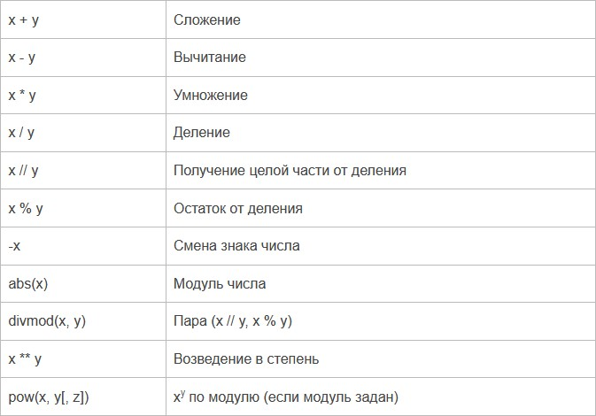
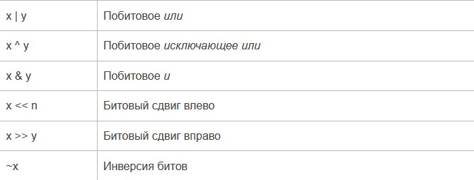

Язык Python
Урок №8. Числа: целые, вещественные, комплексные
Целые числа (int)
Числа в Python 3 ничем не отличаются от обычных чисел. Они поддерживают набор самых обычных математических операций:

Также нужно отметить, что целые числа в python 3, в отличие от многих других языков, поддерживают
длинную арифметику (однако, это требует больше памяти).
>>> 255 + 34
289
>>> 5 * 2
10
>>> 20 / 3
6.666666666666667
>>> 20 // 3
6
>>> 20 % 3
2
>>> 3 ** 4
81
>>> pow(3, 4)
81
>>> pow(3, 4, 27)
0
>>> 3 ** 150
369988485035126972924700782451696644186473100389722973815184405301748249
Битовые операции
Над целыми числами также можно производить битовые операции.

Дополнительные методы
int.bit_length() - количество бит, необходимых для представления числа в двоичном виде, без учёта
знака и лидирующих нулей.
>>> n = -37
>>> bin(n)
'-0b100101'
>>> n.bit_length()
6
int.to_bytes(length, byteorder, *, signed=False) - возвращает строку байтов, представляющих это
число.
>>> (1024).to_bytes(2, byteorder='big')
b'\x04\x00'
>>> (1024).to_bytes(10, byteorder='big')
b'\x00\x00\x00\x00\x00\x00\x00\x00\x04\x00'
>>> (-1024).to_bytes(10, byteorder='big', signed=True)
b'\xff\xff\xff\xff\xff\xff\xff\xff\xfc\x00'
>>> x = 1000
>>> x.to_bytes((x.bit_length() // 8) + 1, byteorder='little')
b'\xe8\x03'
classmethod int.from_bytes(bytes, byteorder, *, signed=False) - возвращает число из данной строки
байтов.
>>> int.from_bytes(b'\x00\x10', byteorder='big')
16
>>> int.from_bytes(b'\x00\x10', byteorder='little')
4096
>>> int.from_bytes(b'\xfc\x00', byteorder='big', signed=True)
-1024
>>> int.from_bytes(b'\xfc\x00', byteorder='big', signed=False)
64512
>>> int.from_bytes([255, 0, 0], byteorder='big')
16711680
Системы счисления
Те, у кого в школе была информатика, знают, что числа могут быть представлены не только в десятичной
системе счисления. К примеру, в компьютере используется двоичный код, и, к примеру, число 19 в
двоичной системе счисления будет выглядеть как 10011. Также иногда нужно переводить числа из одной
системы счисления в другую. Python для этого предоставляет несколько функций:
int([object], [основание системы счисления]) - преобразование к целому числу в десятичной системе
счисления. По умолчанию система счисления десятичная, но можно задать любое основание от 2 до 36
включительно.
bin(x) - преобразование целого числа в двоичную строку.
hex(х) - преобразование целого числа в шестнадцатеричную строку.
oct(х) - преобразование целого числа в восьмеричную строку.
Примеры:
>>> a = int('19') # Переводим строку в число
>>> b = int('19.5') # Строка не является целым числом
Traceback (most recent call last):
File "", line 1, in
ValueError: invalid literal for int() with base 10: '19.5'
>>> c = int(19.5) # Применённая к числу с плавающей точкой, отсекает дробную часть
>>> print(a, c)
19 19
>>> bin(19)
'0b10011'
>>> oct(19)
'0o23'
>>> hex(19)
'0x13'
>>> 0b10011 # Так тоже можно записывать числовые константы
19
>>> int('10011', 2)
19
>>> int('0b10011', 2)
19
Вещественные числа (float)
Вещественные числа поддерживают те же операции, что и целые. Однако (из-за представления чисел в
компьютере) вещественные числа неточны, и это может привести к ошибкам:
>>> 0.1 + 0.1 + 0.1 + 0.1 + 0.1 + 0.1 + 0.1 + 0.1 + 0.1 + 0.1
0.9999999999999999
Для высокой точности используют другие объекты (например Decimal и Fraction)).
Также вещественные числа не поддерживают длинную арифметику:
>>> a = 3 ** 1000
>>> a + 0.1
Traceback (most recent call last):
File "", line 1, in
OverflowError: int too large to convert to float
Простенькие примеры работы с числами:
>>> c = 150
>>> d = 12.9
>>> c + d
162.9
>>> p = abs(d - c) # Модуль числа
>>> print(p)
137.1
>>> round(p) # Округление
137
Дополнительные методы
float.as_integer_ratio() - пара целых чисел, чьё отношение равно этому числу.
float.is_integer() - является ли значение целым числом.
float.hex() - переводит float в hex (шестнадцатеричную систему счисления).
classmethod float.fromhex(s) - float из шестнадцатеричной строки.
>>> (10.5).hex()
'0x1.5000000000000p+3'
>>> float.fromhex('0x1.5000000000000p+3')
10.5
Помимо стандартных выражений для работы с числами (а в Python их не так уж и много), в составе
Python есть несколько полезных модулей.
Модуль math предоставляет более сложные математические функции.
>>> import math
>>> math.pi
3.141592653589793
>>> math.sqrt(85)
9.219544457292887
Модуль random реализует генератор случайных чисел и функции случайного выбора.
>>> import random
>>> random.random()
0.15651968855132303
Комплексные числа (complex)
В Python встроены также и комплексные числа:
>>> x = complex(1, 2)
>>> print(x)
(1+2j)
>>> y = complex(3, 4)
>>> print(y)
(3+4j)
>>> z = x + y
>>> print(x)
(1+2j)
>>> print(z)
(4+6j)
>>> z = x * y
>>> print(z)
(-5+10j)
>>> z = x / y
>>> print(z)
(0.44+0.08j)
>>> print(x.conjugate()) # Сопряжённое число
(1-2j)
>>> print(x.imag) # Мнимая часть
2.0
>>> print(x.real) # Действительная часть
1.0
>>> print(x > y) # Комплексные числа нельзя сравнить
Traceback (most recent call last):
File "", line 1, in
TypeError: unorderable types: complex() > complex()
>>> print(x == y) # Но можно проверить на равенство
False
>>> abs(3 + 4j) # Модуль комплексного числа
5.0
>>> pow(3 + 4j, 2) # Возведение в степень
(-7+24j)
Также для работы с комплексными числами используется также модуль cmath.